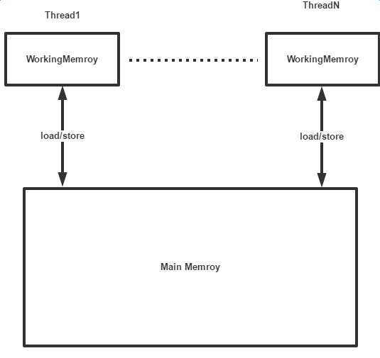
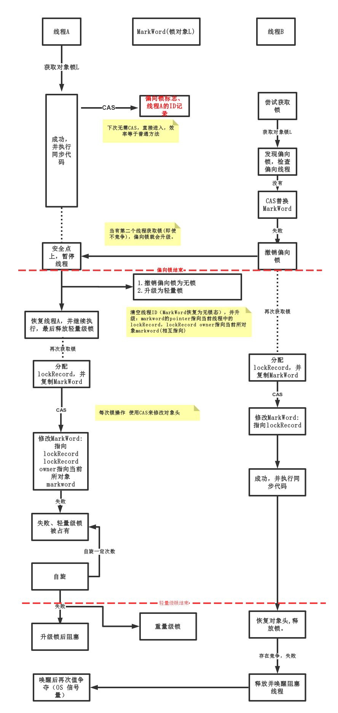

1.并发的优缺点：
优点：
- 充分利用CPU资源; （a.线程数/核心数；b.卡在IO上）。
- 提高效率，并行完成任务，提高系统的吞吐量，更快响应提升用户体验
缺点：
1.线程创建的开销(cpu、内存)
2.线程的上下文切换，cpu轮流被多个线程使用，分配时间片给线程A，线程A使用完时间片，保留当前状态，线程B占用cpu，cpu再次分配给线程 A，线程A恢复之前保存的状态，继续执行。wait——>runnable 产生一次
上下文切换需要消耗系统资源，用户态-核心态的转换需要操作系统的调度。
3.复杂性，挑战：死锁、可见性、线程安全、同步问题等等
2.线程间通信
线程间通过内存（主存）来进行隐式通信。比如，线程A需要通知线程B某个变量值已经修改。线程A——>修改变量后刷入主存中——>线程B从主存中读取到新的值。
3.线程间同步
线程间同步 就是线程间对共享资源的访问（临界区） 按照一定的顺序执行，以确保程序的正确性。
错误的同步：
当线程A对一个变量写入A值；线程B对这个变量写入B值；那么最终这个变量的值可能是A或者B，也就是说这个共享的变量存在竞争写入(a data race)。那么这段代码是错误的同步代码。
通常称在这个变量上存在“数据竞争”（a data race）
4.JMM
JMM在JSR133中被完善，屏蔽了底层硬件细节，抽象内存模型用来规定线程之间如何通过主内存进行通信，也就是本地内存与主内存的通信细节以及synchronized、volatile等关键字的内存语义。
WorkingMemroy 线程私有 并不是物理存在的， 涵盖缓存、寄存器、编译器等硬件设备
MainMemroy 线程间共享 就是指计算机的主内存。

5.volatile
可见性；原子性；有序性；
什么是可见性：一个线程修改了某个变量的值，另一个线程能否读取到这个最新值。
为什么不可见：线程A修改变量后 先存储在本地缓存中，稍后再刷入主存中。缓存线程间私有，不及时刷入缓存无法被另一个线程从主存中读取到。就算线程A及时刷入到了主存，由于线程B会优先从本地缓存中读取数据，也导致了线程B无法及时读取到更新的值。
volatile-可见性：使用汇编语言的lock指令，1确保每次 voloatile变量的读写都会立即刷入到主存中；2同时会使其他workingMemory中缓存的数据失效(硬件协议保证缓存一致性)。
volatile-有序性：通过使用内存屏障，禁止对volaile变量访问代码的重排序，保证了volatile变量访问的有序性。
6.重排序
因为计算机为了优化指令的运行效率，同时JMM也允许缓存、编译器等通过重排序代码来提高运行效率。
比如, int a=123;
int b=321;
可以不按照代码执行的顺序执行。计算结果有保障吗？？
7.happen before原则，通过规定一些必要的重排序限制来保证代码的正确同步。
volatile变量的读操作 发生在 volatile变量的写操作 之前。（也就是说volatile变量的读操作肯定可以读取到最新的值）
一个锁的获取 发生在 这个锁释放之前。
在一个单线程中，代码的执行效果看上去是按照程序编写的顺序执行(as-if-serial)
.......
8.synchronized
使用monitor对象锁机制，通过执行monitorenter\monitorexit来保证对象所得获取与释放 ，同一时刻有且仅有一个线程可以获取锁，来实现互斥执行。
原子性:通过互斥来确保同步块中代码的线程间互斥执行。
可见性：monitorenter指令执行，获取对象锁成功，会将直接从主存中更新数据，读取缓存中的最新数据；monitorexit指令执行，释放了对象锁，将会将当前缓存中的数据刷入到主存中去。
- synchronized静态方法：锁对象是当前类class对象
- synchronized 方法:锁对象是 当前对象
- synchronized块：锁对象是指定的对象
synchronized 锁升级：

Object lock= new ***();
//ThreadA to wait some condition.消费者/等待者
synchronized(lock){
while(!condition){
wait()//waiting at this point
}
doWorkWhenCondition();
}
synchronized(对象) {
while(条件不满足) {
对象.wait();
} 对
应的处理逻辑
}
//ThreadB to change the condition,and wake up threadA.//生产者/通知者
synchronized(lock){
changeCondition;
lock.notify();//condition is true，wake up waiting thread.
}
synchronized(对象) {
改变条件
对象.notifyAll();
}